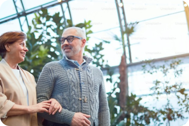
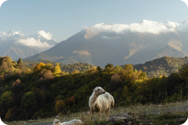

Лечение артрита
Артрит — это воспаление суставов. Понятие артрит является общим и применимым к большой группе болезней, связанных с суставами.
Виды артрита
- Бруцеллёзный (поражание опорно-двигательного аппарата и половой системы)
- Гонорейный (бактериальный артрит, воспаление полости сустава за счёт гонококков)
- Подагрический (основывается на скоплении в суставах кристаллов уратов и мочевой кислоты)
- Реактивный (вирусный артрит, возникает после перенесённых инфекционных заболеваний)
- Ревматоидный (хроническое воспаление тканей)
- Травматический (появляется при нанесении травмы)
Симптомы артрита
- Частая боль в суставах
- Припухлость суставов
- Скованность в движениях
- Усталость
- Быстрая утомляемость
- Периодические ноющие боли
- Бессонница
- Иногда повышение температуры
- Покраснение кожи на заражённых участках
- Потеря аппетита
- Отеки
- Воспаление желез глаз и слизистой рта
- Боль в груди при дыхании и кашле.
Причины возникновения артрита
- Инфекция
- Травмы
- Усиленные физические нагрузки
- Переохлаждения
- Заболевания нервной системы
- Нарушение обмена веществ
- Нарушение иммунной системы
- Недостаток витаминов
Профилактика артрита
- Снижение веса
- Правильное питание
- Ограждение от стрессовых ситуаций
- Исключение из рациона:
- Злаковых культур
- Красного мяса
- Сахара
- Природных жиров
- Соли
- Кофе
- Томатов
- Молочных продуктов
- Перцев
- Баклажанов
Профилактика артрита
Современные методы лечения артрита направлены в первую очередь на избавление пациента от ноющих болей, которые так часто лишают больного комфортной жизни.
Лечение артрита — это комплекс, состоящий из медикаментозных препаратов, лечебной физкультуры, правильного питания и спокойного образа жизни
Для лечения используются современные биопрогревающие системы, которые способствуют мышечной релаксации, снимают боль и предотвращают её повторное появление.
Раннее лечение артрита предотвращает инвалидизацию и улучшает прогнозы.
Метод Ударно-волновой терапии
Массаж
Электрофорез
Мануальное воздействие
Качественное и современное лечение артрита вы получите в нашем санатории «Родничок»!
Болезнь Бехтерева
Болезнь Бехтерева по международным стандартам называется анкилозирующий спондилоартрит. Это воспаление межсуставных хрящей, межпозвонковых суставов, которое провоцирует сращение позвонков.
Симптомы
Симптомы этой болезни поначалу могут напоминать синдромы обычного остеохондроза.
Боли в области поясницы
Припухлось, болезненность суставов
Утренняя скованность
Воспаление глаз, «эффект песка в глазах»
Повышенная температура
Снижение веса
Тугоподвижность позвоночника
Плоская прямая поясница
Ноги при ходьбе слегка согнуты в коленях
Болезненное напряжение мышц спины
Причины возникновения
Главная причина появления этой болезни — агрессивность иммунитета по отношению к тканям собственных суставов.
Количество внешних факторов, влияющих на это:
Генетическая предрасположенность (наличие антигена HLA B27)
Активация иммунной системы организма
Инфекция
Стресс
Травмы опорно-двигательной системы
Профилактика
- Часто и хорошо мыть руки!
- Все овощи, фрукты и остальные продукты, продаваемые без упаковки, обрабатывать кипятком.
- Исключить употребление несвежей пищи
- Соблюдайте культуру половой жизни
- Заболев желудочной инфекцией, обязательно обратитесь к врачу.
- Спровоцировать воспаление могут мокрые ноги
Лечение
Болезнь Бехтерева прогрессирует достаточно быстро, но ей можно противостоять.
Различные лечебные препараты
Внутрисуставные инфекции
Восстановительная физкультура (для видимого эффекта комплекс специальных упражнений должен выполняться по тридцать минут два раза в день)
Физиотерапия
Массаж спины и плечевого пояса
Бассейн
Болезнь Бехтерева рекомендована к лечению в санаторных и оздоровительных комплексах. В санатории «Родничок» есть все благоприятные условия для разрешения ваших проблем.
Лечение остеохондроза (Дорсопатии)
Дорсопатии (остеохондроз) – это дистрофические нарушения в суставных хрящах, чаще всего в межпозвоночных дисках, характеризующие снижение их высоты.
Галерея
-
-
-
 -
 -
-